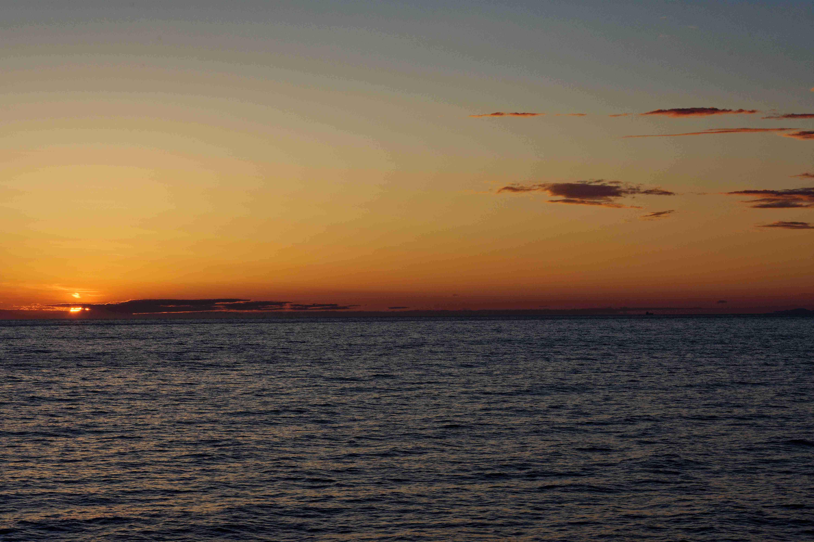

May 28, 2024
Mediterranean 2024
Janet and I took another cruise, this time through the Mediterranean. We decided to try a different cruise line and settled on Oceania, based on a recommendation from one of Janet's friends. On May 28, 2024 we flew from San Francisco to London, UK. There we had a layover and a time change to the next day, May 29, 2024. Then we flew to Rome, Italy and found our driver to take us to Civitavecchia, Italy.
We supposedly started the cruise in Rome, but as it turns out Rome does not have a port for cruise ships. Their port is actually located about an hour north in Civitavecchia, Italy. We got there a couple of days early to settle in and get over our jet lag. The cruise stopped in France (Saint Tropez), Spain (Barcelona and Cadiz), Morocco (Casablanca and Agadir), back to Spain for the Canary Islands of Arracife, Tenerife and La Palma, to Portugal (Funchal aka Madeira) and finally ending in Lisbon, Portugal. We stayed in Portugal another week or so, visiting Pinhao, Porto and returning to Lisbon where we flew back to the USA.

Civitavecchia, Italy is fairly small town about an hour north of Rome, where the cruise port is located.

Our cruise took us to Saint-Tropez, France. We couldn't dock so we had to take a tender in order to get to shore. The tender is a small boat, usually one of the life boats, that is also used to ferry passengers to and from shore when the cruise ship is not allowed or cannot dock at a port.

We stopped in Barcelona and Cadiz, Spain. This time we were able to dock at the port, but the port was far away from the center of town and we had to take the cruise shuttle bus to get into town and walk our way from there.
Later we returned to Spain, visiting the Canary Islands of Arrecife (Lanzarote), Santa Cruz de Tenerife and Santa Cruz de La Palma.
We stopped in Casablanca and Agadir, Morocco. Once again we were able to dock at the ports but it was a long walk to town. Fortunately, in Casablanca, we had a paid excursion so a bus met us at the dock for our guided tour to Rabat.

Our first stop in Portugal was Funchal (Madeira). We faced another long walk into town and we walked around a bit before finding the main thing we wanted to do, which was to ride the cable cars up the steep cliffs.